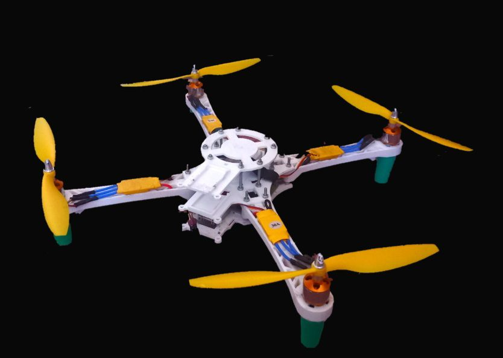

سلام! من محمدرضا اسدی هستم از زنجان، ایران. این اولین کوادکوپتر منه که با زبان برنامهنویسی C++ برنامهنویسی کردم. این کوادکوپتر حدود ۵۰ سانتیمتر طول و عرض داره و با چهار موتور براشلس KV1000 کنترل میشه. جالبه که این کوادکوپتر از طریق گوشی موبایل کنترل میشه و نیازی به کنترل رادیویی نداره. برد کنترل پرواز این کوادکوپتر از چیپ atmega2560 استفاده میکنه که تفاوتی با برد آردوینو نداره. برای ارتباط با گوشی هم از ESP8266 استفاده شده.
اگر علاقهمند به جزئیات فنی و مشاهده کدها هستید، تمام سورس کدها، برنامه و منابع در صفحه گیتهاب من موجود است.
بازدید از صفحه گیتهاب پروژهایمیل من: m82971311@gmail.com

این ویدیو مربوط به اولین پرواز من با کوادکوپتر است که بدنه آن پس از یک ماه تغییر کرد :
ویدیو پرواز کوادکوپتر من:
در آینده، ما رؤیای ساخت کوادکوپترهای پیشرفتهتر و حتی سفینههای فضایی را در سر میپرورانیم. با ما همراه باشید تا آخرین اخبار و تحولات در زمینه هوافضا و اکتشافات فضایی را دنبال کنید. اسرار ناشناخته کیهان در انتظار کشف شدن هستند.
Hello! I am Mohammad Reza Asadi from Zanjan, Iran. This is my first quadcopter that I programmed with the C++ programming language. This quadcopter is about 50 cm long and wide and is controlled by four KV1000 brushless motors. Interestingly, this quadcopter is controlled via a mobile phone and does not require a radio control. The flight control board of this quadcopter uses an atmega2560 chip, which is no different from an Arduino board. ESP8266 is also used to communicate with the phone. If you are interested in technical details and viewing the codes, all the source codes, programs, and resources are available on my GitHub page.
In the future, we dream of building more advanced quadcopters and even spaceships. Stay tuned to follow the latest news and developments in aerospace and space exploration. The unknown secrets of the universe are waiting to be discovered.